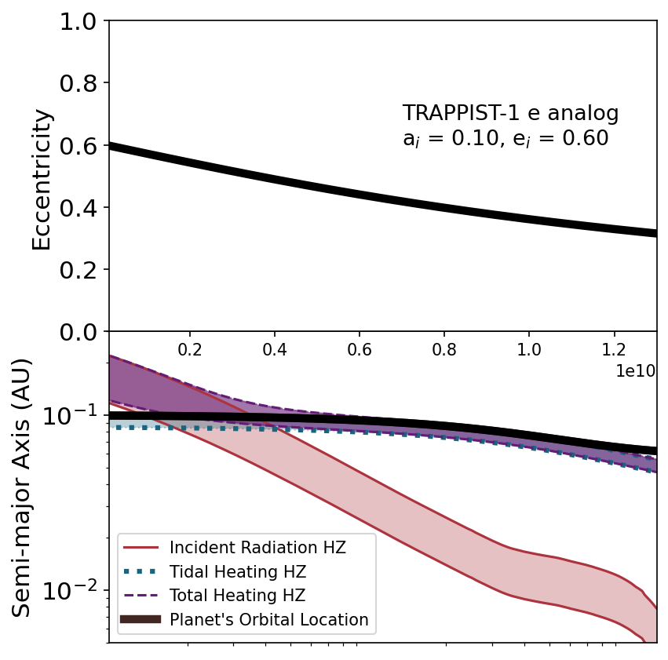

Recent Group News
Fall 2023
The group will be beginning in Fall 2023 with PI Becker's start as faculty in the University of Wisconsin - Madison Department of Astronomy.March 2023
 "The Influence of Tidal Heating on the Habitability of Planets Orbiting White Dwarfs" by Becker et al. has been published in ApJ Letters. In this paper, we assess how tidal heating changes the orbits that can support liquid water around white dwarfs.Academic year 2022 - 2023
As a part PI Becker's work on the DDA, she founded the Dynamics Community Seminar, a virtual space for dynamicists to have conversations about science and the non-science aspects of being a scientist. The first two seminars were held online in December 2022 and March 2023.